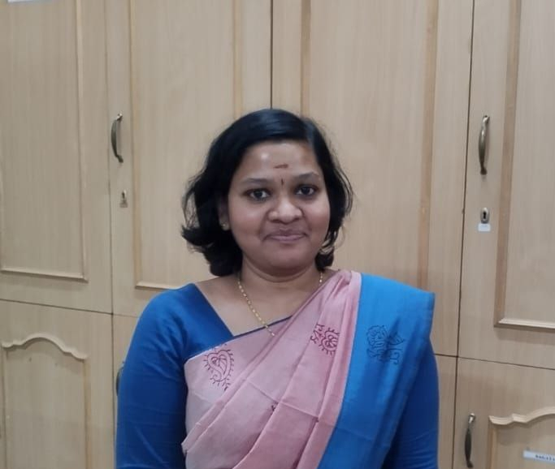

Hi! This is Vaishnavi Balaji
Currently designated as Assistant Research Co-ordinator, (an AIML Researcher) particularly interested in exploring current trends and technologies in Machine learning.
Academic Background
- Holding a Doctor of Philosophy in Machine Learning and GIS and a Master of Science in Software Technology both from Vellore Institute of Technology, Vellore. and a Master of Science in Machine Learning & AI - Executive PG, a dual credential program from Liverpool John Moores University and IIIT Bangalore.
Certifications & Accomplishments
- Achievements include an Advanced Certificate Program in Generative AI from Upgrad, and qualified in the National Eligibility Test (UGC-NET). Recognized as a Rank holder in post-graduation and received merit awards for five consecutive academic years (Bachelors and Masters). Research contributions: Scopus citation index of 120+ and an h-index of 4.
Skill Set
- Proficient in Python and familiar with frameworks like Django and Streamlit. Expertise extends to deep learning with Keras, Scikit-learn, TensorFlow, and Torch, as well as computer vision and natural language processing. Experience in generative AI includes AI chatbot creation, data analysis, and fine-tuning LLMs. Additionally, skilled in RDBMS, cloud services like AWS, and MLops tools such as Airflow and CI/CD pipelines.